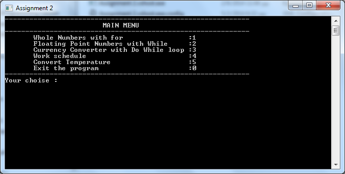

Assignment 2 - Multifunction Menu
A menu is presented to the user at the program start. The user can select one of the following choices and the program will execute the corresponding task. Each task is written to different class and is using the appropriate iteration or selection algorithm.

For the implementation of the program was used the for, while and do - while statements for the iterations and the if - else and switch statements for the selections. Moreover each class is using the proper type of variables to save their data for manipulation,